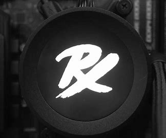

Paper Rex E-sport
Paper Rex adalah organisasi esports Singapura yang berbasis di Singapura. Organisasi ini didirikan bersama pada Januari 2020 oleh Harley "dsn" Örwall dan Nikhil "nikH" Hathiramani. Organisasi ini terutama dikenal dengan divisi Valorant mereka, diumumkan sebagai salah satu waralaba pelopor dalam kompetisi utama Valorant, VCT 2023. Paper Rex didirikan pada Januari 2020 oleh Harley "dsn" Örwall, mantan pemain Counter-Strike profesional dan Nikhil "nikH" Hathiramani, pendiri dan pemimpin redaksi CSGO2ASIA. [2] Tim menggunakan Dreamcore Dream Centre, sebuah toko esports, pusat hiburan, dan toko ritel seluas 10.000 kaki persegi (930 m2) yang berlokasi di Singapura, untuk menampung pusat pelatihan dan staf manajemen mereka.
Paper Rex pindah ke Valorant dengan roster pertama mereka pada 20 Juli 2020, mengakuisisi anggota tim Singapura Vindicta. Tim akan mengalami beberapa perubahan daftar sebelum melepaskan setiap pemain, dengan dua pemain terakhir dibangkucadangkan pada 5 Februari. Pada 8 Februari, Paper Rex memulai musim 2021 mereka dengan mengumumkan perpindahan roster Counter-Strike: Global Offensive mereka ke Valorant, tim yang terdiri dari Kumaresan "Tommy" Ramani, Aaron "mindfreak" Leonhart, Jason "f0rsakeN" Susanto, Benedict "Benkai" Tan, Jorell "Retla" Teo dan Khalish "d4v41" Rusyaidee dan Alex "alecks" Salle sebagai pelatih mereka.
Pada 20 Mei 2021, Paper Rex mengumumkan kepergian Tommy. Pada 21 Mei 2021, hanya sehari kemudian, Paper Rex mengumumkan penandatanganan Zhan Teng "shiba" Toh. Paper Rex akan menempati posisi ke-2 di Southeast Asia Stage 3 Challengers Playoffs, lolos ke VCT Masters 2 Berlin dan menempati posisi ke-13 – 15. Mereka memulai musim 2022 dengan menempati posisi ke-1 di MY/SG Stage 1 Challengers dan APAC Stage 1 Challengers, lolos ke Masters Reykjavík sebagai tim unggulan teratas untuk wilayah APAC, di mana mereka menempati posisi ke-4, posisi tertinggi rekor mereka saat itu di acara internasional. [7][8] Paper Rex akan melanjutkan untuk mengulangi rekor domestik mereka di tahap berikutnya, menempati posisi ke-1 untuk MY/SG Stage 2 Challengers dan APAC Stage 2 Challengers. Ini membuat mereka memenuhi syarat untuk Masters Copenhagen, di mana mereka menempati posisi ke-2 di belakang FunPlus Phoenix, dan merupakan tim Asia (dan APAC) pertama yang mencapai Grand Final, melampaui pencapaian mereka sebelumnya dan mencatat posisi tertinggi mereka di acara internasional sejauh ini. [9][10] Paper Rex lolos ke Valorant Champions 2022